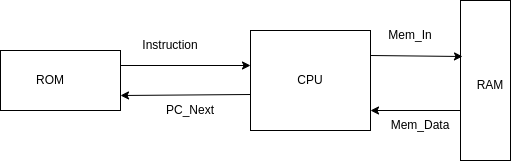
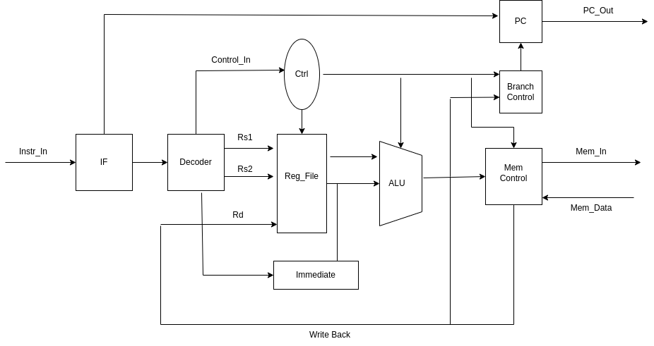
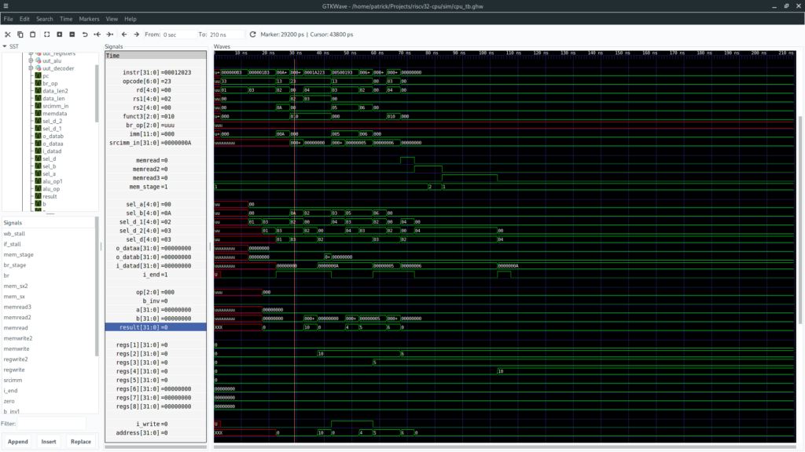
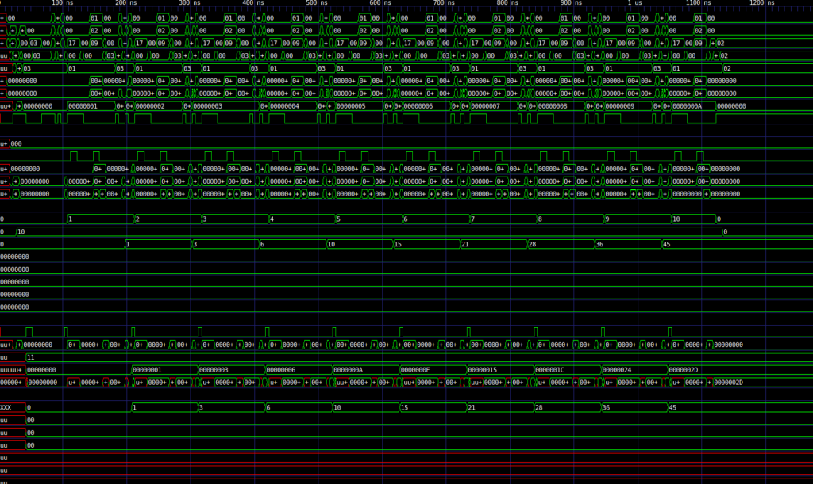

RISC-V CPU
My minor at school is computer engineering, and in the course of a computer engineering minor, one will likely learn either VHDL or Verilog. My school teaches VHDL, and as someone who likes Ada and verbose languages that are easy to follow, I've stuck to VHDL. Someday I'll try Verilog...
Anyway. I really enjoy working with hardware, in part because my computer science specialty of compilers is very close to the hardware. Since covid19 has started, I've been using my free time to experiment with VHDL to better understand how hardware works under the hood. I've written several hardware components as you may have seen on Github, culminating with a school project to implement a LegV8 CPU. The CPU is fully pipelined and implements all the essential instructions, so needless to say, I'm very proud of it. However, there are things I don't like about Arm (LegV8 is a subset of Arm), and I originally learned how hardware works with RISC-V, so I decided to implement a RISC-V core.
Currently, the core implements the 32-bit integer base instruction set. You can find the project here: https://github.com/pflynn157/riscv32-cpu.
Why RISC-V?
RISC-V is a new CPU architecture created by the original RISC creators. Unlike many architectures created by academic institutions, the creators intended for this to be an open-source architecture that can be used in the real world environments without commercial overhead. Any company can take RISC-V, create a CPU conforming to the standard, and either implement a chip or extend it to their uses. In my field of high-performance computing, this architecture has potential in an area where heterogeneous architectures are becoming the standard.
While the open-source nature is great, its other big advantage is its simplicity. The architecture is very simple to understand and implement on a hardware level, making it suitable for learning and research.
When I was working on my LegV8 CPU, I pretty much wrote it for the sake of learning and the school assignment it was for. While implementing a CPU had been on the back of my mind for a while, this was only meant for learning the process. I considered creating my own RISC architecture (and I still might to do that sometime), but after implementing LegV8, I decided it would just be easier to implement RISC-V. And quite frankly, it would be more useful in the real world.
ISA
As stated, this CPU currently implements the RV 32I base instruction set. There are a few arithmetic instructions not yet implemented, but all the branch, load, store, and most of the arithmetic are supported. I followed this spec while working on it:
rv32i
In that list, the following are implemented and tested:
- LUI
- BEQ
- BNE
- BLT
- BGE
- LB
- LH
- LW
- LBU
- LHU
- SB
- SH
- SW
- ADDI
- XORI
- ORI
- ANDI
- ADD
- SUB
- XOR
- OR
- AND
- NOP
Architecture
Below is a very rough overview of the entire architecture:

And this is a rough overview of the CPU itself:

As you can see, the CPU is an implementation of the Harvard architecture. The idea behind this is to keep instructions in 32-bit word fast memory so they can be quickly read and processed by the CPU. Data is kept in standard DRAM memory of blocks of 1-byte words. This is slower to use than instruction memory, but allows for more precision in the size of data to be stored.
The CPU itself is composed of several components. It is fully pipelined, following the standard five-stage IF, ID, EX, ME, WB stages (instruction fetch, instruction decode, execute, memory read/write, register write-back). Stalls are kept to a minimum, but the branching and memory control units are capable of stalling the pipeline as needed. While this is not great for performance, the impact is not huge, and it allows for a simpler design.
Although there are several components in this diagram, only the decoder, register file, and ALU are separate entities from the rest of the CPU. The decoder is the simplest part, taking in an instruction and outputting all the possible values. The register file is a standard register component, taking in two registers for output and one register for write-back. The ALU is also very standard. The memory control and branch control happen within the CPU pipeline itself. Branch control requires a 3-cycle stall after the ID (decode) stage. The first stage calculates the comparison and evaluates whether the branch should be taken. The second stage calculates the new program counter address, and the third broadcasts the program counter. The regular pipeline then resumes, fetching the new instruction if the branch was taken. The memory control is actually only called on loads. Stores can be done while the rest of the pipeline continues, but since loads write to a register that will likely be needed in the near future, a 2-cycle stall is required to broadcast the needed address and get the input data.
The instruction and data memories are separate entities from the CPU as in the real world. While one of my plans is to add a "motherboard" component that can connect all this, I currently use the test benches to simulate this motherboard behavior.
Testing
Under the test folder, you will notice a number of test benches all very identical. These contain automated testing for the CPU instructions. Each test bench acts as a motherboard, sending the new instruction memory values, and managing requests to data memory.
You will also notice the CPU itself has debug controls. When the CPU is switched into debug mode, the test bench can request the data stored in specific registers to verify the correctness of operations. Debug mode is part of the main CPU component, but it operates independently of the pipeline as a whole. Once debug mode is enabled, the pipeline will completely stall. As a result, it is a good idea to add 5-6 clock cycles after executing your program in the test bench to make sure the pipeline has had time to fully execute.
Building and Running
Once of the nice things about VHDL and Verilog is that they operate outside your computer's environment, so generally it will work on any OS as long as you have a decent compiler. I use the
GHDL compiler along with GtkWave for visualization. Both can be found in the Linux package repositories. To build and run, simply call "make".
I imagine this would work out of the box on MacOS and possibly Windows, but I'm not sure. If you want to use a full IDE like the Xilinx one, you'll probably have to copy-and-paste all the code in, but it should work without modification afterwards.
Future Work
Before I implement much more, I want to take a break to do some basic operating system development. This would be quite handy to understanding how the CPU interacts with the real world (writing assembly in user mode is a start, but that only goes so far). Once I finish that, my immediate plans are:
- Finish adding the shift arithmetic instructions
- Create a "motherboard" component to link the CPU, memory, BIOS ROM, and instruction memory
- Find a better way to load test programs
After that, I want to experiment with things like:
- Floating point hardware
- SIMD hardware
- Multiplication and division
- Multi-core and threading
- Maybe some exotic instruction formats...
I also really want to get this running on an FPGA.
Screenshots
Here is one screenshot of it running a simple program:

My favorite example is this C program:
int n = 0;
for (int i = 0; i<10; i++) {
n += i;
}
// n = 45;
Which assembles to this:
add x1, x0, x0
addi x2, x0, 10
add x3, x0, x0
sw x3, [x0, 0]
LOOP:
nop
bge x1, x2, DONE
lw x3, [x0, 0]
nop
add x3, x3, x1
nop
sw x3, [x0, 0]
addi x1, x1, 1
nop
beq x0, x0, LOOP
DONE:
addi x1, x0, x0
addi x2, x0, x0
And looks like this:
